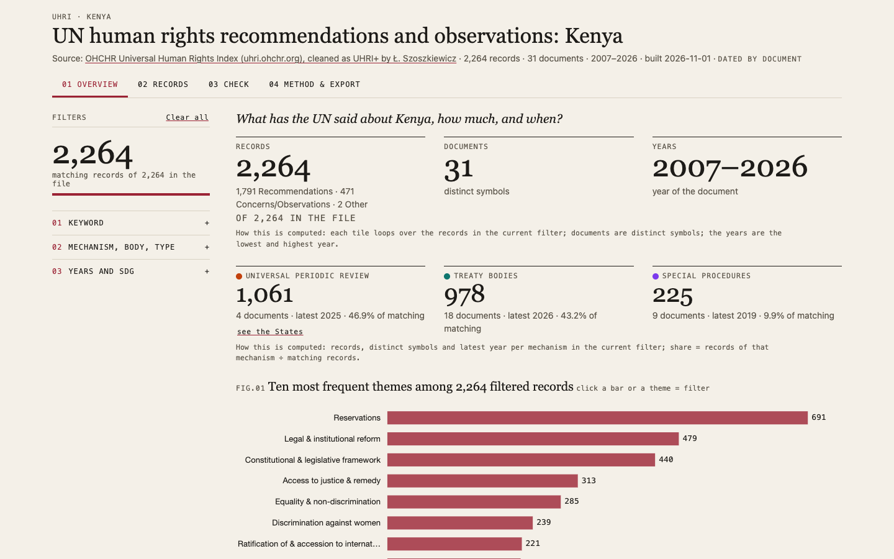
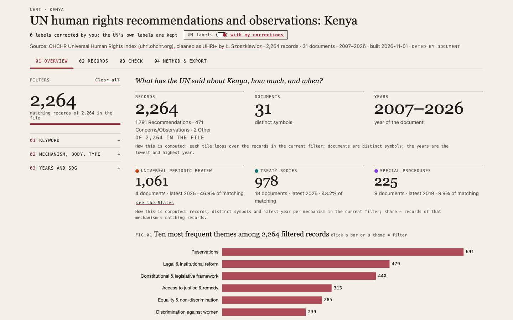

Run 2026-11-04T14-46-17. Country: Kenya. Click a screenshot to open the app.
| Claude Sonnet 5.5 · USA · Anthropic API | |
|---|---|
| s7-1-dashboard |  8/8 · 283.1 s · $0.506 · 677 lines all checks passed |
| s7-3-check-ten |  5/5 · 323.3 s · $0.664 · 949 lines all checks passed |